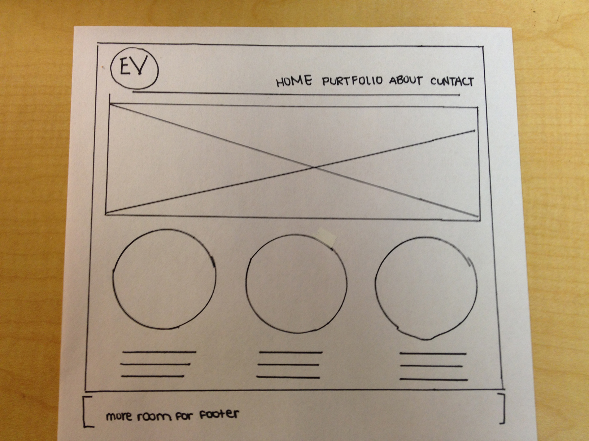

I want my personal branding/logo to be prominent in the top left corner of the page, directly next to the navigation. I want my navigation headings to be Home, Portfolio, About, and Contact, in that order.
I want the main body of the home page to be a picture, designed by me, that follows my overall design/color theme along with the rest of the site. Below that, I want three smaller sections that have designed images. One will say Web, one will say Print, and one will say Other. These images will have a small description sections that will list examples of the work that applies to it (so under Print, it will say Posters, Advertisments, Magazines, Brochures, etc. and do the same for Web and Identitiy). I want the user to be able to click those and it will take them to the portfolio page with examples of work I have already done. I think it adds extra useful navigation, and also gives the viewer an immediate understanding of the work I do.
It will be a simple, clean layout that will be easy to navigate and show off the best features.
